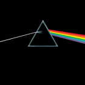
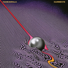
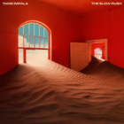
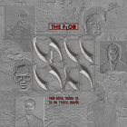

Music is the arrangement of sound to create some combination of form, harmony, melody, rhythm, or otherwise expressive content. Music is generally agreed to be a cultural universal that is present in all human societies. Definitions of music vary widely in substance and approach. While scholars agree that music is defined by a small number of specific elements, there is no consensus as to what these necessary elements are. Music is often characterized as a highly versatile medium for expressing human creativity. Diverse activities are involved in the creation of music, and are often divided into categories of composition, improvisation, and performance. Music may be performed using a wide variety of musical instruments, including the human voice. It can also be composed, sequenced, or otherwise produced to be indirectly played mechanically or electronically, such as via a music box, barrel organ, or digital audio workstation software on a computer.
No Sleep Session
"No Sleep Session is an indie band from Ho Chi Minh City, Vietnam, known for their unique sound and engaging performances. They have garnered a following with tracks like "Đời Xanh" and their recent EP "Xoay Một Vòng," released in late February 2025. Their music is available on platforms like Spotify, where they have approximately 12,900 monthly listeners. They actively engage with fans through their Facebook page and YouTube channel, sharing music videos and updates.
Music
Music often plays a key role in social events and religious ceremony. The techniques of making music are often transmitted as part of a cultural tradition. Music is played in public and private contexts, highlighted at events such as festivals and concerts for various different types of ensembles. Music is used in the production of other media, such as in soundtracks to films, TV shows, operas, and video games.
Listening to music is a common means of entertainment. The culture surrounding music extends into areas of academic study, journalism, philosophy, psychology, and therapy. The music industry includes songwriters, performers, sound engineers, producers, tour organizers, distributors of instruments, accessories, and publishers of sheet music and recordings. Technology facilitating the recording and reproduction of music has historically included sheet music, microphones, phonographs, and tape machines, with playback of digital musics being a common use for MP3 players, CD players, and smartphones.
   